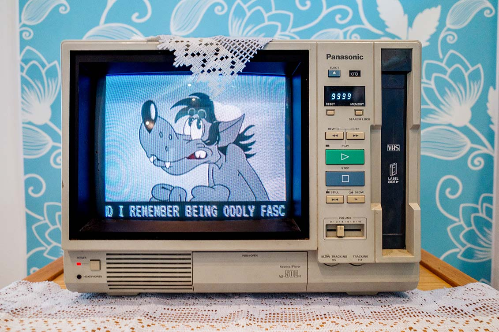
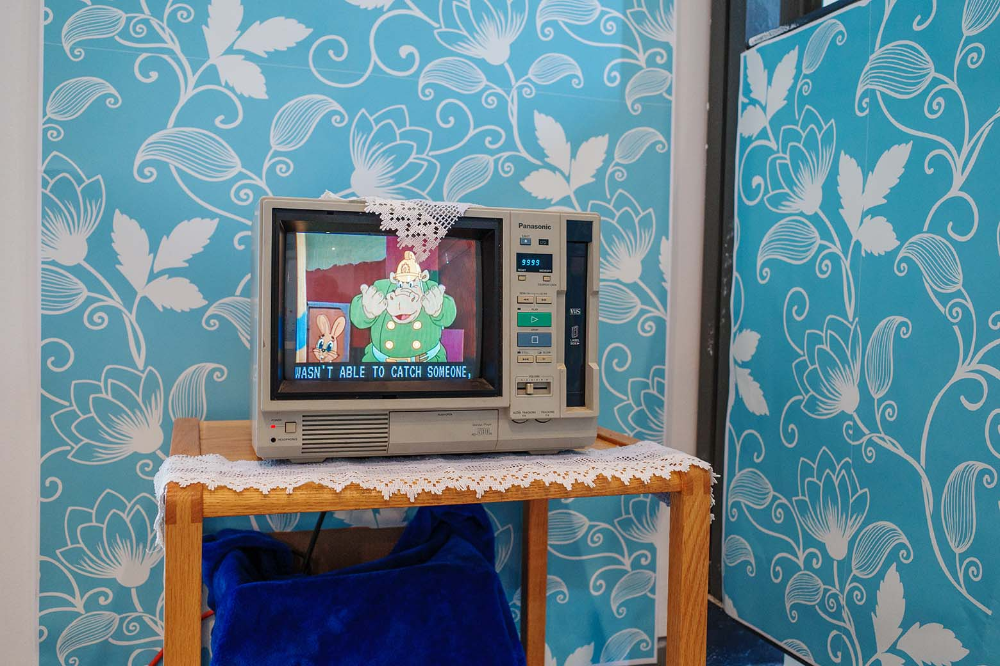
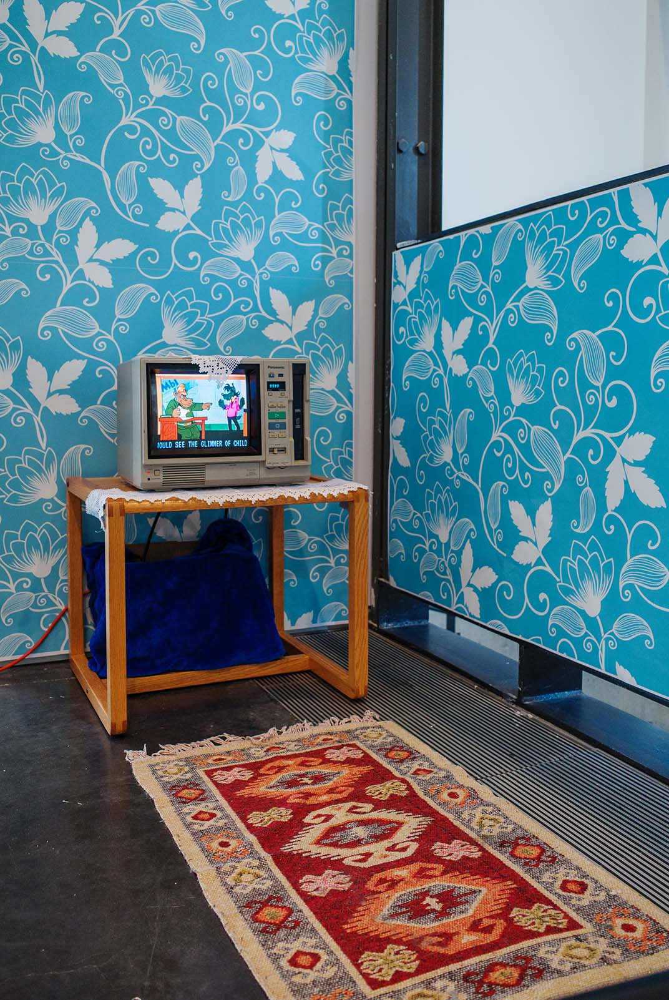

Hand-me-down Memories
By Kalo & Aylin
A childhood dreamscape; a set of memories; an infinite episode of Nu Pogodi. It's strange that we grew up watching this cartoon, a product of a country and ideology that no longer exists.
The final version of the site for the install featured a 2 hour download of the video to ensure fast loading in unpredictable internet speeds. You can see the code, without the video file, here.


